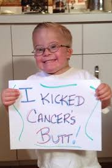
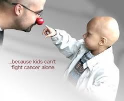
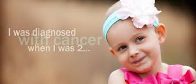
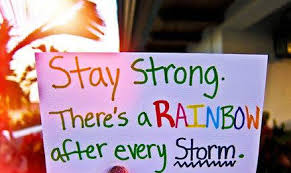

WHEN CHILDREN BECOME THE VICTIM OF THE 'CANCER DEVIL
We’ve all watched movies where the hero fights the bad guys dodging various obstacles, encountering odds and fighting valiantly to come out victorious in the end. The bad guy here is ‘Cancer’ and the hero is a little naïve child.
When a child or teen is diagnosed with cancer it comes like a blow to the parents, siblings, and others who love them. The cancer creates a crisis in the normal life of each family member. But just like our movies, it is our responsibility to handle obstacles sportingly and try to emerge out as heroes in the life of our children.
The types of cancers that occur most often in a child are different from those seen in adults. The most common cancers of children are:
- Leukemia-
- Brain and Central Nervous System tumors
- Bone cancer
- Lymphoma:
- Neurolastoma
- Nephroblastoma
- Retinoblastoma
cancers of the blood and bone marrow account for about 30% of all cancers in children. These can cause bone and joint pain, fatigue, pale skin, bleeding, weight loss and fever.
constitute about 26% of childhood cancers. Most brain tumors in children initiate in the cerebellum. They can cause nausea,headaches, vomiting, blurred vision and dizziness.
Osteosarcoma is common in teens, and usually develops near the ends of the long bones in arms or legs. Ewing sarcoma is another type of bone cancer occurring in the pelvic bones, the chest wall or in the middle of the long leg bones.
These cancers start in the lymphocytes. They grow in lymph nodes and other lymph tissues, like the tonsils. Lymphomas can cause fever, weight loss, sweats, tiredness and lumps.
starts in early forms of nerve cells found in a fetus and constitute for about 6% of childhood cancer.This tumor starts usually in the belly and can be noticed as a swelling.
accounts for roughly 5% of childhood cancers. It starts in one or both kidneys. It is most often found in children of the age group of 3- 4 years.
is a cancer of the eye and makes up for about 2% of childhood cancers. It normally occurs in children around the age of 2.
The family of a child diagnosed with cancer goes through a potpourri of mental turbulence. All parents seem to feel shock,fear, guilt, sadness, anger and anxiety. To add to the stress, parents feel like they are on an emotional roller coaster ride. The daily psychological, physical, financial and mental frustration of dealing with a complex health care system, new places, and many different care providers can also enhance disturbance and anger.
There are various methods which parents should adopt while dealing with such a situation:
- 1. Remembering that feelings of panic and shock will pass with time.
- 2.The disbelief and denial that strikes at first can help buffer feelings of agony and stress. Some denial is perfectly normal and not harmful unless it keeps a child from getting the proper timely treatment.
- 3.Having a thorough check of the reputation of the medical center and qualifications of the treatment team.
- 4.Asking for help and getting a second opinion if necessary and reviewing the information.
- 5. Talking with a team social workers working to fight cancer, about their feelings.
- 6. Seeking comfort from family members or friends. Understandably, when unhappy,parents may want to avoid taking part in social activities. But having a break and being distracted from the cancer and its treatment will do everyone good.
- 7. Seeking spiritual support, getting guidance from pastors, using prayer and meditation as a means of stress reliever.
Parents need to take cancer up as a challenge and help their children realize that they will always fight the battle together. Innocent as they are, children need to be properly explained about the disease, its effects and treatments. Different age groups require diverse methods of care and methods of understanding these complexities.

Ages 0 to 3–Are not capable of understanding the term ‘cancer’ and are most afraid that the hospital staff will take them away from their parents and are deathly scared of medical treatments. Parents need to assure them that they will not abandon them.
Ages 3 to 7 - Can understand if the term ‘cancer’is explained in simple terms. Being honest with the child about the various tests , medicines and treatments helps. Also, it must be explained that the doctors are treating them to help make them better.
Ages 7 to 12 - can understand a more detailed explanation of cancer. It is best to be honest with them about pain likely from tests and treatments. Kids at this age tend to hear about information regarding cancer from other sources, such as school, TV, and the Internet. It will help, if the parents and children discuss it together instead of letting the poor kid engulf himself in a shadow of doubts and delusions.
Teenagersare capable of understanding about a detailed and complex explanation of cancer and may have many related questions. They are likely to think about their cancer in terms of its symptoms and the effect it will have in daily activities, such as friends, school and sports.Teens also may have access to various other sources of information so they may want to play a role in making considerable decisions about their treatment. It is in the best interest to talk honestly with them about the possible side effect.
A brief, single conversation between the parent and child probably won't be enough. Having frequent discussions will help to keep the lines of communication open. Parents should try to be honest and encourage children to inquire about their doubts. Sharing feelings with children gives them support and the faith that their parents were, are and will always be the strongest pillars of their lives. Cancer can come as a turbulent storm in our peaceful life but we need to stand steadfast in the face of difficulty and show the demon that we will not be deterred by it.
Thanks for reading and please keep visiting our blog to discover and appreciate more Yoddhas.
02 Comments